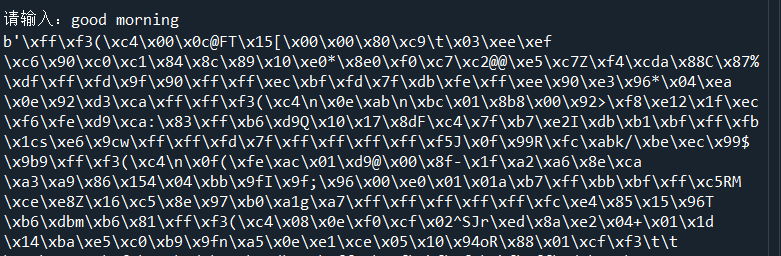
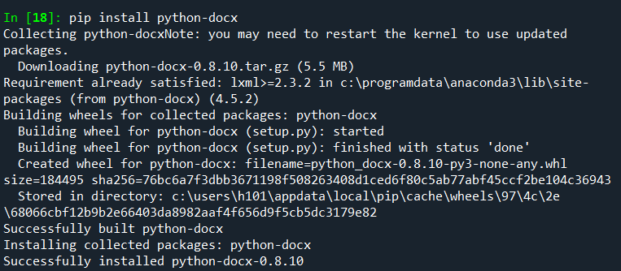
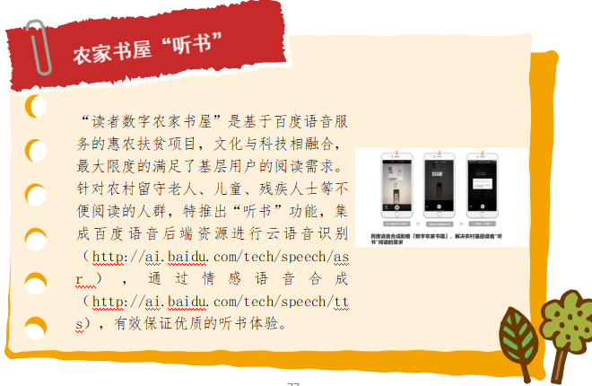

任务三 语音合成 （语音助手）
【任务描述】
文字与音频的互相转换是自然语言处理中很关键的技术点。“把文字转换成声音，让你的应用开口说话”就是利用语音合成技术将文本转换成音频。现在我国各大AI企业都有对应的免费开放API为开发者提供应用服务。例如，百度2108年6月份就发布了百度语音识别无限量使用。本任务完成从键盘输入中文，调用百度API将输入的中文转换成mp3音频文件同时播报这段音频。
【任务实施】
本任务使用任务2中已经申请的百度账号，请确保已经领取语音合成的免费额度。
步骤1 与任务2中一样，import利用百度账号创建一个client对象。

步骤2 定义变量text，存储从键盘输入的内容。
text = input('请输入：')
步骤3 参考官网技术文档中“接口说明”，调用synthesis方法将text转换成音频并以mp3文件保存到本地。“per”参数可以用来设置合成语音的不同声音模式，“spd”用来设置语速，“vol”用来设置语调，这些参数虽然是可选设置，但是可以根据不同内容设置多样化的语音表达，赶紧试试吧。


步骤4 利用playsound播报MP3音频文件。
- 安装playsound
pip install playsound
- playsound的使用方法
from playsound import playsound
playsound('audio.mp3')
本任务中result存储的是文字合成的二进制代码，可以用在result = client.synthesis（）之后增加一句print(result)语句，运行出现类似下图中的二进制码则表明文本合成语音成功了。

本次任务完整参考代码如下：
from aip import AipSpeech
from playsound import playsound
# 填写自己申请的 ID 与 Key
APP_ID = '*******'
API_KEY = '******'
SECRET_KEY = '******'
client = AipSpeech(APP_ID,API_KEY,SECRET_KEY)
text = input('请输入：')
result = client.synthesis(text,'zh',1,{'vol':5,'per':0})
print(result)
# 识别正确放回语音二进制 错误放回dict
if not isinstance(result,dict):
with open('audio.mp3','wb') as f:
f.write(result)
playsound('audio.mp3')
【任务拓展】
随着AI技术的发展，语音合成技术已经被越来越多的应用，很多网站都在文章内容页面嵌入了语音朗读功能，AI合成主播也开始在新闻媒体中应用。我们也可以改进任务3，让机器给我们朗读一篇文章。下面通过语音合成技术将本地的Word文档变成“有声”读物，希望聪明的你举一反三，例如天气播报助手等。
步骤1 安装python-docx库。python-docx是一个用于创建和更新微软Word（.docx）文件的Python库，具备设置段落、分页符、表格、图片、标题、样式等几乎所有的word文档中能常用的功能，但是主要用来创建文档。

步骤2 import Document ，利用Document打开本地的docx文档。
from docx import Document
path = 'new.docx'
document = Document(path)
步骤3 读取docx文档中的段落文字并保存到text中。
text = ''
for garagraph in document.paragraphs:
print(garagraph.text)
text += garagraph.text
接下来就是将text转换成语音，操作与任务3一样，完整的参考代码如下：
from aip import AipSpeech
from playsound import playsound
from docx import Document
path = 'new.docx'
document = Document(path)
# 填写自己申请的 ID 与 Key
APP_ID = '*******'
API_KEY = '******'
SECRET_KEY = '******'
client = AipSpeech(APP_ID,API_KEY,SECRET_KEY)
text = ''
for garagraph in document.paragraphs:
print(garagraph.text)
text += garagraph.text
result = client.synthesis(text,'zh',1,{'vol':5,'per':0})
print(result)
# 识别正确放回语音二进制 错误放回dict
if not isinstance(result,dict):
with open('audio.mp3','wb') as f:
f.write(result)
playsound('audio.mp3')

本任务实战代码如下,位于/xm1/rw3.ipynb 同学们来运行一下吧